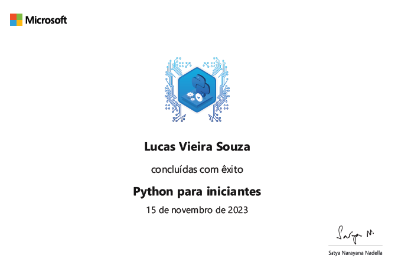

Microsoft Python:
Completed Microsoft Python for Beginners course, mastering essential concepts such as variables, data types,
loops, and functions. Equipped with foundational knowledge to pursue entry-level opportunities in Python
development.
Download


 EnglishㅤㅤFluent
EnglishㅤㅤFluent SpanishㅤㅤInter
SpanishㅤㅤInter Frenchㅤ
Frenchㅤ